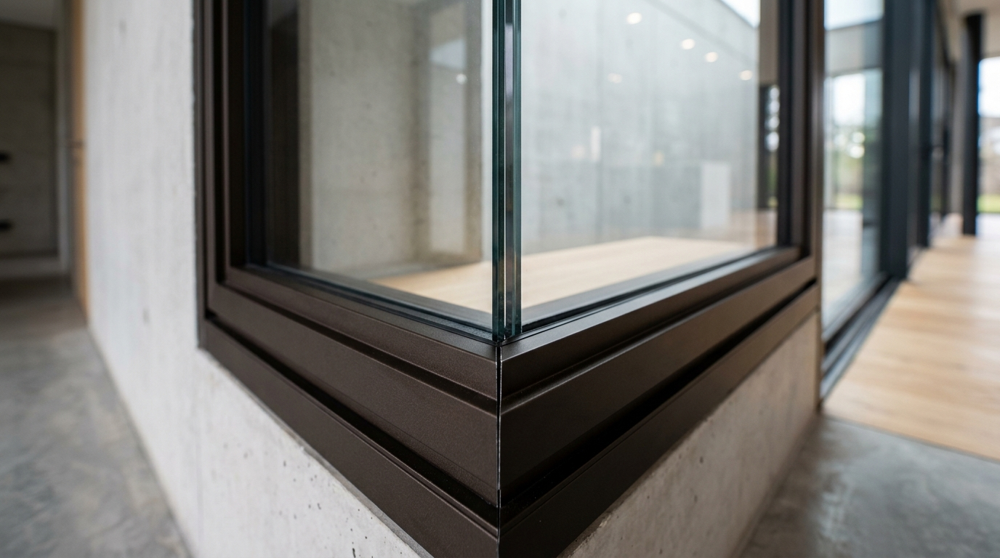

Perbandingan Kusen Aluminium Alexindo vs YKK AP di Dau: Mana Lebih Bagus?

📌 Ringkasan Inti
Kusen aluminium Alexindo di Dau umumnya dipilih untuk kebutuhan standar dengan harga lebih terjangkau, sementara YKK AP unggul di presisi dan ketahanan warna jangka panjang.
- Alexindo dikenal sebagai merk aluminium lokal dengan harga lebih bersaing untuk proyek rumah tinggal standar.
- YKK AP merupakan merk premium dengan reputasi presisi pengerjaan dan lapisan anodizing yang lebih tahan lama.
- Ketebalan profil 3 inch umum dipakai untuk jendela rumah biasa, sedangkan 4 inch lebih cocok untuk bukaan lebar.
- Iklim Dau yang sejuk dan cenderung lembap perlu dipertimbangkan saat memilih lapisan finishing aluminium.
- Pemilihan merk sebaiknya disesuaikan dengan anggaran, kebutuhan estetika, dan jangka waktu pemakaian yang diinginkan.
- 1. Apa Perbedaan Utama Kusen Aluminium Alexindo dan YKK AP?
- 2. Merk Mana yang Lebih Cocok untuk Rumah Tinggal di Dau?
- 3. Berapa Selisih Harga Antara Alexindo dan YKK AP Secara Umum?
- 4. Tips Memilih Antara Profil 3 Inch atau 4 Inch di Kawasan Dingin
- 5. Faktor Pemasangan Presisi dan Rekomendasi Aplikator
Bagi Anda yang sedang merencanakan pembangunan rumah tinggal atau renovasi vila di kawasan Dau, Kabupaten Malang, memilih merk kusen aluminium yang tepat sangat menentukan estetika dan keawetan bangunan terhadap iklim sejuk berkabut khas lereng pegunungan.
1. Apa Perbedaan Utama Kusen Aluminium Alexindo dan YKK AP?
Perbedaan utama Alexindo dan YKK AP terletak pada segmen pasar dan tingkat presisi produksi, di mana Alexindo diposisikan sebagai merk aluminium lokal untuk kebutuhan standar dengan harga ekonomis, sedangkan YKK AP diposisikan sebagai merk kelas atas (high-end) dengan standar kontrol kualitas pabrik yang sangat ketat.
| Aspek Komparasi | Alexindo | YKK AP |
|---|---|---|
| Segmen Pasar | Standar menengah, harga bersaing | Premium arsitektural |
| Ketebalan Profil Umum | 1.00 mm – 1.15 mm (standar 3 & 4 inch) | 1.15 mm – 1.35 mm (standar 3 & 4 inch presisi) |
| Lapisan Finishing | Anodizing standar & Powder Coating | Anodizing presisi mikron tinggi, warna sangat stabil |
| Ketersediaan Warna | Silver, Hitam, Cokelat, Putih | Gloss Silver, Dark Brown, Matte Black, Champagne |
| Karakter Sambungan Miter | Rapat standar aplikator | Sangat presisi tanpa celah rambut |
| Kesesuaian Proyek | Rumah tinggal standar, ruko, kontrakan | Vila modern, rumah mewah, fasad kaca lebar |
Kedua merk sama-sama menggunakan bahan dasar billet aluminium bermutu tinggi, namun proses anodizing pada YKK AP memiliki lapisan oksida pelindung yang lebih tebal dan homogen, sehingga warnanya jauh lebih tahan terhadap radiasi sinar UV dan oksidasi kelembapan udara dingin pegunungan. Sementara itu, Alexindo menjadi pilihan favorit karena rasio harga terhadap kekuatannya yang sangat seimbang.

2. Merk Mana yang Lebih Cocok untuk Rumah Tinggal di Dau?
Untuk rumah tinggal keluarga berkonsep minimalis standar di Dau, Alexindo umumnya menjadi pilihan yang sangat memadai karena harganya ramah di kantong dan kekuatan profilnya sudah terbukti andal menopang kaca jendela berukuran standar rumah tinggal.
Kecamatan Dau merupakan kawasan penyangga antara Kota Malang dan Kota Batu yang berada di lereng Gunung Kawi dan Panderman. Suhu udara di Dau cenderung sejuk dan memiliki tingkat kelembapan udara relatif tinggi, terutama pada sore hingga malam hari saat kabut turun. Kelembapan yang konsisten sepanjang tahun ini membuat ketahanan lapisan anti karat dan sambungan sudut kusen menjadi faktor penting.
Jika hunian Anda dirancang dengan konsep modern mewah, seperti villa peristirahatan di kawasan Sumbersekar atau Mulyoagung yang memiliki bukaan jendela kaca panoramic lantai-ke-plafon (floor-to-ceiling), maka YKK AP adalah investasi jangka panjang terbaik karena profilnya yang kokoh dan minim risiko muai-susut.
Paket Fabrikasi Kusen Aluminium Rumah Dau & Malang Barat
Tersedia pilihan profil resmi Alexindo dan YKK AP original bergaransi resmi aplikator. Konsultasikan kebutuhan ukuran dan dapatkan survei ukur presisi gratis untuk wilayah Dau, Karangploso, dan sekitarnya.
3. Berapa Selisih Harga Antara Alexindo dan YKK AP Secara Umum?
Selisih harga antara Alexindo dan YKK AP secara umum cukup signifikan. Di pasaran Malang Raya, kusen YKK AP memiliki kisaran harga sekitar 30% hingga 50% lebih tinggi per meter lari dibanding Alexindo.
Selisih harga ini sangat wajar mengingat spesifikasi alloy (paduan logam) YKK AP yang lebih padat, toleransi ketebalan yang sangat akurat, serta teknologi pewarnaan elektrodiposisi anodize yang tahan gores dan tidak mudah pudar hingga puluhan tahun. Untuk perbandingan simulasi biaya pasang dan harga per meter di wilayah tetangga, Anda dapat menyimak ulasan kusen aluminium Alexindo vs YKK AP di Singosari.
Komponen biaya akhir proyek di Dau juga dipengaruhi oleh jenis aksesoris pelengkap, seperti engsel friction stay stainless steel 304, handle cremone casement, dan ketebalan kaca yang digunakan.
4. Tips Memilih Antara Profil 3 Inch atau 4 Inch di Kawasan Dingin
Ukuran profil aluminium standar yang umum diaplikasikan di Indonesia adalah 3 inch (lebar penampang sekitar 7,6 cm) dan 4 inch (lebar penampang sekitar 10,1 cm). Berikut panduan pemilihannya:
- Gunakan Profil 3 Inch: Cocok untuk bukaan jendela kamar tidur, ventilasi boven, atau pintu kamar mandi berukuran standar (lebar di bawah 80 cm dan tinggi di bawah 210 cm). Sangat menghemat biaya material.
- Gunakan Profil 4 Inch: Wajib dipertimbangkan untuk kusen pintu utama, bukaan jendela fasad dua lantai, atau sekat kaca mati berukuran besar di Dau agar rangka tidak melenting saat diterpa angin pegunungan yang kuat.
"Untuk rumah hunian di Dau yang dikelilingi udara dingin dan kabut lembap, ketahanan lapisan anodize atau powder coating sangat krusial. YKK AP memberikan durabilitas warna terbaik, namun Alexindo dengan pengerjaan miter 45° presisi tetap menjadi pilihan rasional yang sangat tangguh."
5. Faktor Pemasangan Presisi dan Rekomendasi Aplikator
Merk aluminium terbaik sekalipun tidak akan berfungsi optimal jika dipasang oleh tukang yang kurang berpengalaman. Pemasangan sambungan sudut miter 45 derajat harus dipotong menggunakan mesin miter saw presisi tinggi dan direkatkan dengan spigot aluminium kokoh.
Selain itu, celah antara kusen dan plesteran dinding bata wajib diisi dengan sealant silikon netral weatherseal untuk mencegah hawa dingin dan tetesan air embun merembes ke dinding dalam rumah. Memilih aplikator spesialis bergaransi di Malang Raya memastikan pengerjaan rapi tanpa cacat.
Kesimpulan Praktis
Kusen aluminium Alexindo cocok untuk kebutuhan rumah tinggal standar di Dau dengan anggaran yang lebih terjangkau, sementara YKK AP lebih disarankan untuk hunian dengan tuntutan estetika dan ketahanan warna jangka panjang, terutama mengingat kondisi udara Dau yang cenderung lembap. Pertimbangkan anggaran, orientasi desain rumah, dan jangka waktu pemakaian sebelum menentukan pilihan akhir.
Pertanyaan Seputar Kusen Alexindo & YKK AP di Dau
Kusen Alexindo umumnya cukup kuat untuk kebutuhan rumah dua lantai dengan bukaan standar, selama pemasangan dilakukan sesuai spesifikasi dan ketebalan profil yang direkomendasikan untuk bukaan tersebut.
YKK AP dianggap lebih premium karena standar produksinya yang lebih ketat, termasuk presisi sambungan dan kualitas lapisan anodizing yang membuat warna permukaan lebih tahan lama terhadap paparan cuaca.
Secara teknis memungkinkan, misalnya YKK AP untuk area fasad utama yang lebih terekspos dan Alexindo untuk bukaan di area belakang, namun sebaiknya dikonsultasikan dengan tukang pasang agar hasil akhir tetap konsisten secara estetika.
Kelembapan yang tinggi secara umum dapat memengaruhi kecepatan pudarnya lapisan finishing pada aluminium, sehingga memilih produk dengan anodizing berkualitas baik dapat membantu menjaga tampilan kusen lebih lama.